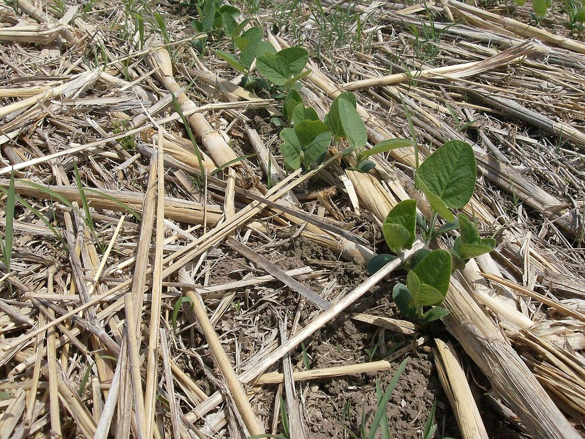
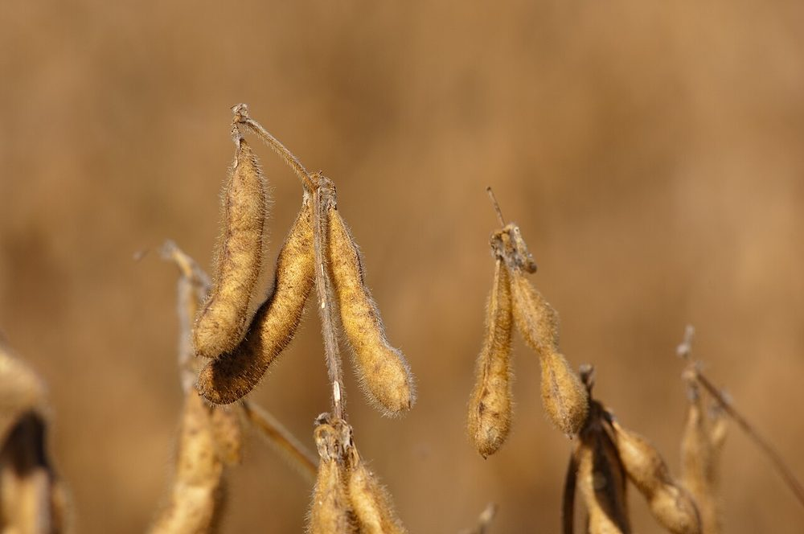

Culture vivrière
Soja
Oléagineux et protéine animale
- Cycle 90 à 110 jours
- Mise à jour 2026-10-26
- Niveau de confiance partiel

Présentation et utilisations
Oléagineux destiné aux huileries et à l'aliment du bétail, cultivé aussi en association avec le maïs. Il fixe l'azote et améliore la fertilité de la parcelle.
Climat et sols
Chaleur, bonne pluviométrie pendant la floraison et le remplissage des gousses ; sols drainés. La période critique est la floraison : un stress hydrique y fait chuter le rendement.
Variétés adaptées
Choisir une variété adaptée à la zone et à la durée de saison, avec un bon port et une maturité groupée. Les noms homologués ne sont pas documentés ici : demander la liste au FIRCA ou à un service de semences certifiées.
Calendrier cultural
Semis en saison des pluies installée, récolte 3 à 4 mois plus tard. En association avec le maïs, semer le soja sur la même période.
Préparation du terrain
Labour et nivellement, sol fin. Inoculation des semences recommandée si la parcelle n'a jamais porté de soja : à faire avec un inoculant adapté, sur conseil technique.
Semis et plantation
Semis en lignes, à une profondeur modérée, densité à confirmer localement. Éviter les semis trop profonds et les sols croûtés.
Entretien, fertilisation, irrigation
Sarclages précoces, puis la culture couvre le sol. Éviter l'excès d'azote : la plante fixe le sien. Phosphore et potassium selon analyse de sol.
Engrais : quoi, combien, quand
L'inoculation remplace l'azote : c'est l'apport le plus rentable sur un sol qui n'a jamais porté de soja.
| Apport | Dose | Quand | Comment |
|---|---|---|---|
| InoculantInoculant (Bradyrhizobium japonicum) | 1 sachet pour 10 à 20 kg de semence | Au semis, à l'ombre | Traitement des graines juste avant le semis, sans soleil direct |
| MinéralPhosphore (P2O5) | 30 à 60 kg/ha | Au semis | En bande ou en poquet |
| MinéralPotassium (K2O) | 20 à 40 kg/ha | Au semis | En bande |
| OrganiqueCompost | 3 à 5 t/ha | Avant le semis | Incorporé (facultatif si le sol est déjà riche) |
Doses par hectare de culture pure, à ajuster selon l'analyse de sol. Sans analyse, rester dans la fourchette basse et fractionner l'azote : c'est le geste qui évite de brûler la culture et de payer un engrais qui ne sera pas valorisé.
Maladies, ravageurs et prévention
Surveiller les chenilles défoliatrices, les punaises des gousses et les maladies foliaires en fin de cycle. La rotation limite les nématodes. Seuils non documentés ici.
Récolte et post-récolte
Récolter quand les gousses jaunissent et que les graines durcissent, avant l'égrenage. Éviter la récolte sous pluie : les graines se tachent et perdent de la valeur.
Conservation et transformation
Séchage à l'air, tri des graines moisies (risque de mycotoxines), stockage au sec et au frais.
Coûts, rendements et débouchés
Débouchés : huileries, provende, semence certifiée. Un contrat avec un acheteur est préférable avant de semer une grande surface. Aucun prix vérifié ici.
Tutoriel étape par étape
- 1. Vérifier le débouché
Trouvez l'acheteur ou l'huilerie avant de semer : sans contrat local, le soja se vend mal.
- 2. Préparer et inoculer
Terre fine, semence saine ; inoculez si la parcelle n'en a jamais porté, sur conseil technique.
- 3. Semer en lignes
Semez en lignes, pas trop profond, régulièrement ; en association, gardez les écartements du maïs.

Maggilautaro · CC BY 3.0 · Wikimedia Commons - 4. Surveiller la floraison
La floraison est la période fragile : pas de manque d'eau, pas de traitement inutile.
- 5. Récolter sec
Récoltez bien sec, séchez, enlevez les graines moisies avant de stocker.

United Soybean Board · CC BY 2.0 · Wikimedia Commons
Sources, vérification et limites
- Base de connaissances interne · knowledge/agronomie.md, knowledge/techniques_agricoles.md (consulté le 2026-10-21)
Limites de cette fiche. Variétés et rendements non documentés. Le prix et l'existence d'un débouché local doivent être vérifiés avant tout investissement.
Dernière mise à jour : 2026-10-26. Les prix, rendements et calendriers locaux ne sont mentionnés que lorsqu'ils sont documentés ; dans le doute, la fiche le dit.